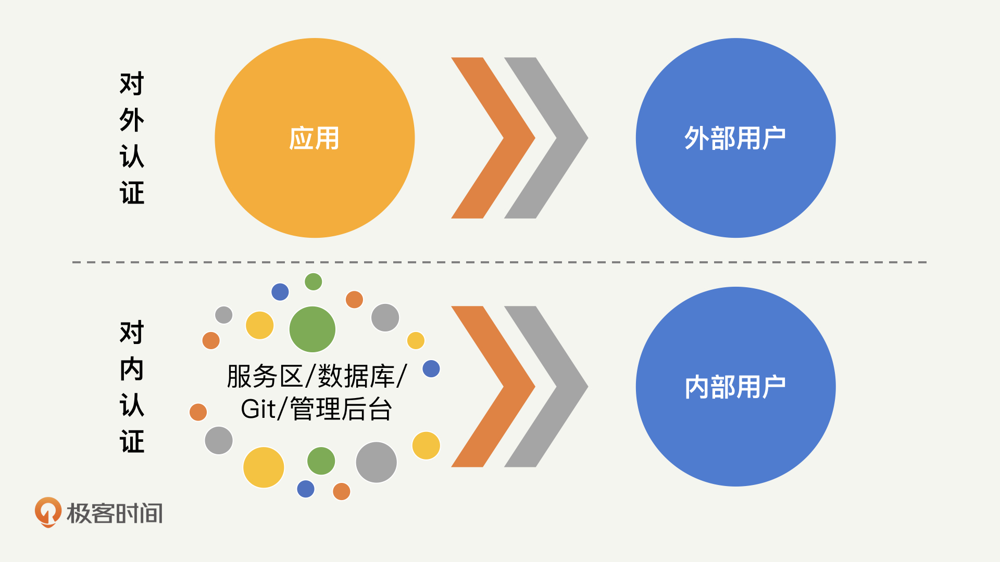
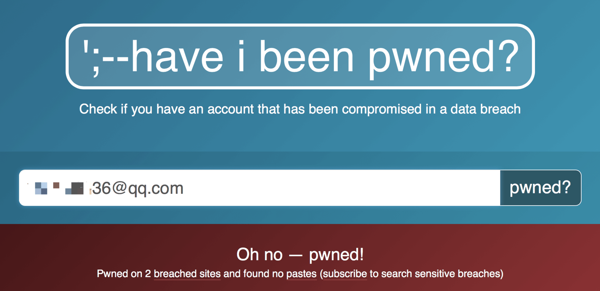
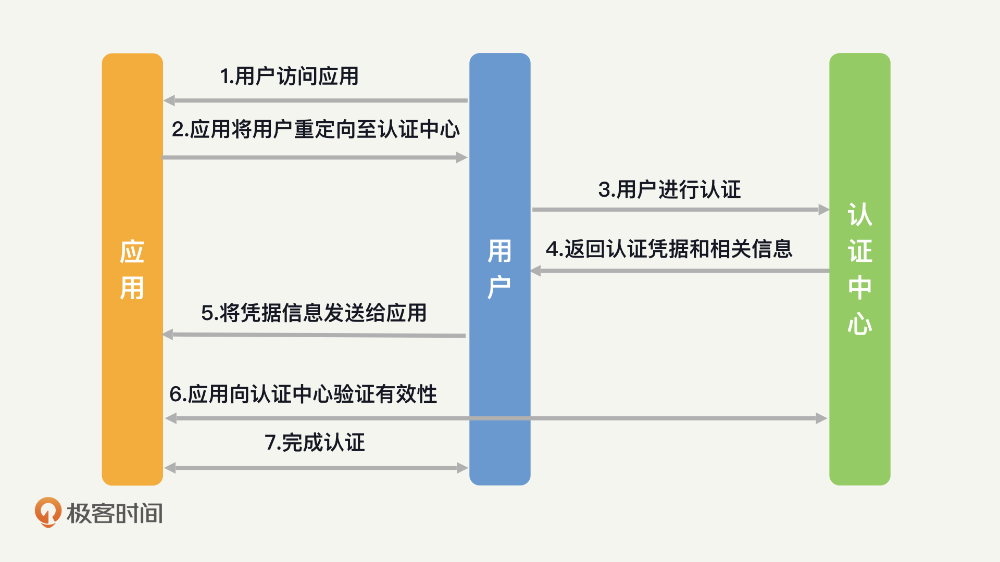
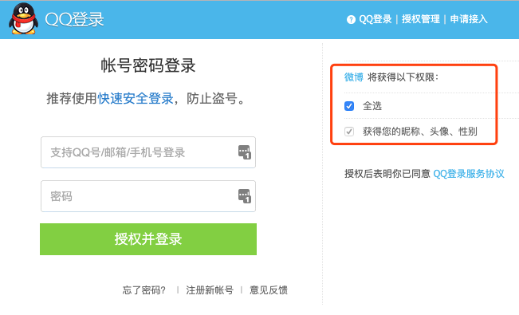
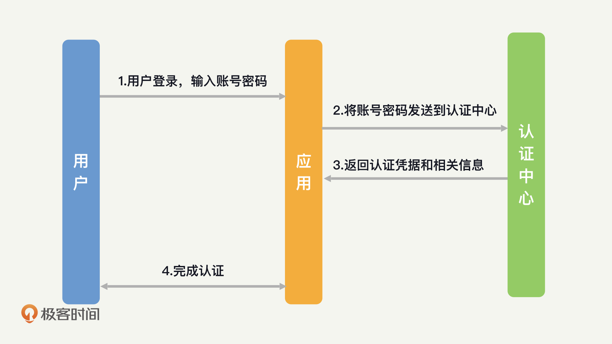

- 00 开篇词 别说你没被安全困扰过.md.html
- 01 安全的本质：数据被窃取后，你能意识到问题来源吗？.md.html
- 02 安全原则：我们应该如何上手解决安全问题？.md.html
- 03 密码学基础：如何让你的密码变得“不可见”？.md.html
- 04 身份认证：除了账号密码，我们还能怎么做身份认证？.md.html
- 05 访问控制：如何选取一个合适的数据保护方案？.md.html
- 06 XSS：当你“被发送”了一条微博时，到底发生了什么？.md.html
- 07 SQL注入：明明设置了强密码，为什么还会被别人登录？.md.html
- 08 CSRF_SSRF：为什么避免了XSS，还是“被发送”了一条微博？.md.html
- 09 反序列化漏洞：使用了编译型语言，为什么还是会被注入？.md.html
- 10 信息泄露：为什么黑客会知道你的代码逻辑？.md.html
- 11 插件漏洞：我的代码看起来很安全，为什么还会出现漏洞？.md.html
- 13 Linux系统安全：多人共用服务器，如何防止别人干“坏事”？.md.html
- 14 网络安全：和别人共用Wi-Fi时，你的信息会被窃取吗？.md.html
- 15 Docker安全：在虚拟的环境中，就不用考虑安全了吗？.md.html
- 16 数据库安全：数据库中的数据是如何被黑客拖取的？.md.html
- 17 分布式安全：上百个分布式节点，不会出现“内奸”吗？.md.html
- 18 安全标准和框架：怎样依“葫芦”画出好“瓢”？.md.html
- 19 防火墙：如何和黑客“划清界限”？.md.html
- 20 WAF：如何为漏洞百出的Web应用保驾护航？.md.html
- 21 IDS：当黑客绕过了防火墙，你该如何发现？.md.html
- 22 RASP：写规则写得烦了？尝试一下更底层的IDS.md.html
- 23 SIEM：一个人管理好几个安全工具，如何高效运营？.md.html
- 24 SDL：怎样才能写出更“安全”的代码？.md.html
- 25 业务安全体系：对比基础安全，业务安全有哪些不同？.md.html
- 26 产品安全方案：如何降低业务对黑灰产的诱惑？.md.html
- 27 风控系统：如何从海量业务数据中，挖掘黑灰产？.md.html
- 28 机器学习：如何教会机器识别黑灰产？.md.html
- 29 设备指纹：面对各种虚拟设备，如何进行对抗？.md.html
- 30 安全运营：“黑灰产”打了又来，如何正确处置？.md.html
- 加餐1 数据安全：如何防止内部员工泄露商业机密？.md.html
- 加餐2 前端安全：如何打造一个可信的前端环境？.md.html
- 加餐3 职业发展：应聘安全工程师，我需要注意什么？.md.html
- 加餐4 个人成长：学习安全，哪些资源我必须要知道？.md.html
- 加餐5 安全新技术：IoT、IPv6、区块链中的安全新问题.md.html
- 模块串讲（一）Web安全：如何评估用户数据和资产数据面临的威胁？.md.html
- 模块串讲（三）安全防御工具：如何选择和规划公司的安全防御体系？.md.html
- 模块串讲（二）Linux系统和应用安全：如何大范围提高平台安全性？.md.html
- 结束语 在与黑客的战役中，我们都是盟友！.md.html
- 捐赠
04 身份认证：除了账号密码，我们还能怎么做身份认证？
你好，我是何为舟。
上一讲，我们详细讲解了密码学的三种算法：高效安全的对称加密算法，解决密钥分发难题的非对称加密算法，以及提供单向加密的散列算法。
在表达了你对密码学清晰的理解之后，面试官开始相信你具备安全方面的基础知识了。于是，他准备和你探讨一下安全落地的细节。基于你之前提出的“黄金法则”，面试官问道：“黄金法则的认证（Authentication）部分不就是账号密码吗？这么简单的东西，有必要考虑得那么复杂吗？”
认证，也就是身份识别与认证（通常来说，识别和认证是一体的，因此后面我会用身份认证来指代识别和认证）。毫无疑问，对于一个安全的应用来说，身份认证是第一道门槛，它为后续所有的安全措施提供“身份”这样一个关键信息。
听完你的简单叙述后，面试官直接问道：“现在我们公司有好几个应用，每一个应用都有独立的账号体系，管理起来十分复杂。而且，内部员工的账号体系也没有建设起来。如果是你，你会怎么解决这些问题呢？”
现在你可能很难回答这些问题，没关系，带着这些问题，让我们来学习今天的内容。相信学完之后，再有人问，你都可以对答如流。
身份认证包括哪些东西？
首先，身份认证不仅仅是一个输入账号密码的登录页面而已，应用的各个部分都需要涉及身份认证。在我看来，身份认证可以分为两个部分：对外认证和对内认证。
对外认证，其实就是应用的登录注册模块，它面向用户进行认证。对外认证的入口比较集中，一个应用通常只有一个登录入口。因此，我们可以在登录这个功能上，实现很多种认证的方式。这就可以用到我们之前提到的“你知道什么、你拥有什么、你是什么”。
除了应用本身需要有登录注册的模块，应用的各种内部系统同样需要涉及登录认证的功能，比如：服务器的登录、数据库的登录、Git的登录、各种内部管理后台的登录等等。这也就是我所说的对内认证。
那么，对内认证和对外认证有什么区别呢？我觉得，它们最主要的区别在于认证场景的复杂程度。从下面这张图中我们可以看出，对外认证是单一场景下的认证，对内认证是多场景下的认证。

在了解了对内、对外认证的特点之后，我们再来聊一聊它们的应用。我了解到的目前行业的现状是，各个公司的对内认证都比较薄弱。其主要原因在于，内部的认证场景过于分散，很难进行统一管理。尤其是服务器、数据库等的认证，目前还无法做到统一。因此，对内认证是一个长期治理的过程，需要我们投入较大的精力。
正如我在第一节课中提到的，“面对一个问题时，我们总是很容易发现表面的影响，而忽视其产生的根本原因”，在身份认证这个问题上同样如此。表面上，我们要做好对外认证，防止用户的账号被盗。根本上或者说更普遍的问题是，我们要如何做好对内认证。因此，当你在考虑身份认证的安全问题时，一定要尽可能考虑得更全面。毕竟，对于安全来说，有一个小场景没做到位，很多时候，就意味着什么都没做。
身份认证主要面临哪些威胁？
接下来，你肯定想问，我们该如何做好身份认证呢？不要着急，我们先来看一下身份认证都会面临哪些威胁。只要我们针对这些威胁找到对应的解决办法，就能做好身份认证了。身份认证面临的威胁主要包括无认证、弱密码、认证信息泄露。接下来，我们一个一个来看。
首先，没有认证环节是所有应用和公司存在的最普遍的问题。尤其是在对内认证的部分，我们经常会看到，很多公司的数据库、接口、管理后台在使用的时候，并不需要经过认证这个环节。
除了没有认证环节的直接“裸奔”，弱密码也是一个普遍存在的问题。我常常觉得，安全最大的敌人是人类的惰性。设计一个好记的强密码并不是一件简单的事情，这也是弱密码屡禁不止的原因。
说完了无认证和弱密码，接下来我们来聊一聊认证信息泄露。所谓认证信息泄露，就是指黑客通过各种手段，拿到了用户的密码信息和身份凭证这样的认证信息。常见的手段包括钓鱼、拖库等等。更可怕的是，很多攻击对于用户来说都是无感知的。
那么，无感知体现在哪里呢？我们可以来做一个小测试。你可以在haveibeenpwned中，输入自己的账号信息，测试一下它们是否被泄露了。如果显示“Oh no -powned!”，那就说明你的邮箱密码已经被泄露了，我建议你可以尽快修改你的密码了。

除了密码的直接泄露以外，大部分的登录系统都无法应对重放攻击。重放攻击简单来说就是，黑客在窃取到身份凭证（如Cookie、Session ID）之后，就可以在无密码的情况下完成认证了。
总结来说，身份认证面临的威胁其实都是认证信息的泄露。这其中，既可能是应用本身就没有认证信息或者认证信息强度比较弱，使得黑客可以通过猜测的方式快速获取认证信息；也有可能是黑客通过一些攻击手段（如窃听等），从用户那获取了认证信息，从而冒充用户进行登录。
而身份认证被破解的后果，相信你也知道一些：一旦黑客仿冒了正常用户进行认证，那么就相当于获得了这个用户的所有权限。更严重的是，所有的后续操作，都会记录到这个正常用户的名下，使得后续应用进行授权和审计的时候，都很难发现黑客本身的存在。
身份认证的安全怎么保证？
在了解了身份认证环节会面临的各种威胁，以及这些威胁可能产生的影响之后，你可能要问了，我们应该怎么解除这些威胁呢？我觉得，很多时候，我们解决安全问题，不只是在解决一个技术问题，还要培养外部用户和内部员工的安全意识。也就是说，认证安全并没有什么完善的技术解决方案，更多的是通过一些规章制度去强化我们的安全意识。
尽管如此，我这里也会去讲一些技术方案，让你知道一些基本的解决方案。
比如，对密码的强度进行限制（如强制使用字母、数字、特殊字符的组合密码，并达到一定长度），强制用户定期修改密码，对关键操作设置第二密码（如微信、支付宝的支付密码）等等。
当然，随着互联网的发展，我们也会不断地利用新技术去升级验证手段，帮助用户降低被“攻击”的风险。比如，通过手机验证替代密码验证（因为丢失手机的几率比丢失密码的几率低）；通过人脸、指纹等生物特征替代密码。
除此之外，我们还可以通过加密信道（如HTTPS）来防止窃听；也可以通过给下发的凭证设置一个有效期，来限制凭证在外暴露的时间，以此来减少重放攻击带来的影响。
这里面有一点你要注意，身份认证的最大的问题还是在于身份管理。随着公司业务的不断扩张，当账号体系变得越来越复杂时，如何对这些账号进行统一的管理，是解决身份认证问题的关键。而单点登录就是一个非常有效的解决方案。
单点登录如何解决身份认证问题？
那么单点登录（Single Sign On，SSO）到底是什么呢？单点登录的概念很简单：用户只需要进行一次认证，就可以访问所有的网页、应用和其他产品了。随着互联网产品形式的不断发展，单点登录的实现方式也经历了多次的升级革新。下面我为你介绍几种典型的单点登录方式，它们分别是：CAS流程、JWT、OAuth和OpenID。
第一个要讲的是CAS（Central Authentication Service，集中式认证服务）流程。
CAS是一个开源的单点登录框架，它不属于某一种单点登录的实现方式，而是提供了一整套完整的落地方案。整体的流程如下图所示，具体步骤我会通过访问极客时间App的例子来为你详细讲解。

- 假如用户现在要访问某个应用，比如极客时间App。
- 应用需要进行认证，但应用本身不具备认证功能。因此，应用将用户重定向至认证中心的页面。比如，你在登录一个应用的时候，它显示你可以选择微信、QQ、微博账号进行登录，你点击微信登录，就跳转至微信的登录页面了。
- 用户在认证中心页面进行认证操作。如果用户之前已经在其他应用进行过认证了，那么认证中心可以直接识别用户身份，免去用户再次认证的过程。
- 认证完成后，认证中心将认证的凭据，有时会加上用户的一些信息，一起返回给客户端。也就是你在微信登录完成后，回到了极客时间App。
- 客户端将凭据和其他信息发送给应用，也就是说，极客时间App将微信的登录凭据发送给了极客时间后端。
- 应用收到凭据后，可以通过签名的方式，验证凭据的有效性。或者，应用也可以直接和认证中心通信，验证凭据并获取用户信息。这也就是为什么极客时间能够拿到你的微信头像了。
- 用户完成认证。
CAS的流程非常经典，你现在应该理解了吧？我们后面要讲的3种单点登录方式，都和CAS的流程相似，说它们是CAS的“衍生品”也不为过。所以说，你一定要先掌握了CAS流程，然后再来看下面这3种。
JWT（JSON Web Token）是一种非常轻量级的单点登录流程。它会在客户端保存一个凭证信息，之后在你每一次登录的请求中都带上这个凭证，将其作为登录状态的依据。JWT的好处在于，不需要应用服务端去额外维护Cookie或者Session了。但是，正是因为它将登录状态落到了客户端，所以我们无法进行注销等操作了。
OAuth（Open Authorization）的主要特点是授权，也是我们通常用QQ、微信登录其他应用时所采用的协议。通过OAuth，用户在完成了认证中心的登录之后，应用只能够验证用户确实在第三方登录了。但是，想要维持应用内的登录状态，应用还是得颁发自己的登录凭证。这也就是为什么QQ授权后，应用还需要绑定你的手机号码。这也就意味着，应用是基于QQ的信息创建了一个自身的账号。

OpenID（Open Identity Document）和OAuth的功能基本一致。但是，OpenID不提供授权的功能。最常见的，当我们需要在应用中使用微信支付的时候，应用只需要收集支付相关的信息即可，并不需要获取用户的微信头像。
在实际情况中，基于各种业务需求的考虑，很多公司都倾向于自己去实现一套SSO的认证体系，它的认证流程如下图所示：

在这个流程中，应用的服务器直接接收用户的认证信息，并转发给认证中心。对用户来说，这个认证中心是完全透明的。但是，这个流程给予了应用过多的信任，从安全性方面考量的话，是不合理的。在这个过程中，应用直接获取到了用户的认证信息，但应用能否保护好这些信息呢？我们并没有有效的办法去做确认。
因此，我的建议是，多花一些功夫去接入成熟的单点登录体系，而不是自己去实现一个简化版的。JWT适用范围广，在单点登录的选取上面，如果想要将用户信息做统一管理，选择它最为简单；如果认证中心只是被用来维护账号密码，由业务去维护用户所绑定的其他手机等信息，那么，采用OAuth更合适。
总结
好了，今天的内容差不多了，下面我来带你总结回顾一下，你要掌握的重点内容。
身份认证的主要场景可以分为：对外认证和对内认证。其中，对内认证往往会因为管理的疏忽，导致很严重的问题。从威胁上来说，无认证和弱密码，是最普遍的安全问题。除此之外，各种密码和认证信息的窃取，也是黑客常用的攻击手段。对于身份认证来说，单点登录是一种集大成的解决方案。基于CAS流程，衍生出了很多成熟的单点登录流程，可以供你去使用。
那么，掌握身份认证的一些技巧，对我们有哪些帮助呢？首先，任何的应用都会存在对内和对外的认证，因此，这将是你提升应用安全水平的一个首要任务。其次，在复杂的应用系统和网络结构中，如何管理身份认证，既优化用户体验，又保证其安全性，对你的设计和管理能力都是一个考验。做好了身份认证，不论是在安全上，还是在个人能力上，你都能够得到极大的提升。
思考题
好了，学习了今天的内容，你现在可以来思考一下面试官的问题：怎么做好认证？
这里我先给你提供一个思路。首先，你需要告诉面试官，公司目前存在哪些认证问题。这些认证问题的存在，可能导致哪些严重后果。接下来，就可以设想一下，想要解决这些认证问题，你会设计出怎样的认证体系。
欢迎留言和我分享你的思考和疑惑，也欢迎你把文章分享给你的朋友。我们下一讲再见！
© 2019 - 2023 Liangliang Lee. Powered by gin and hexo-theme-book.